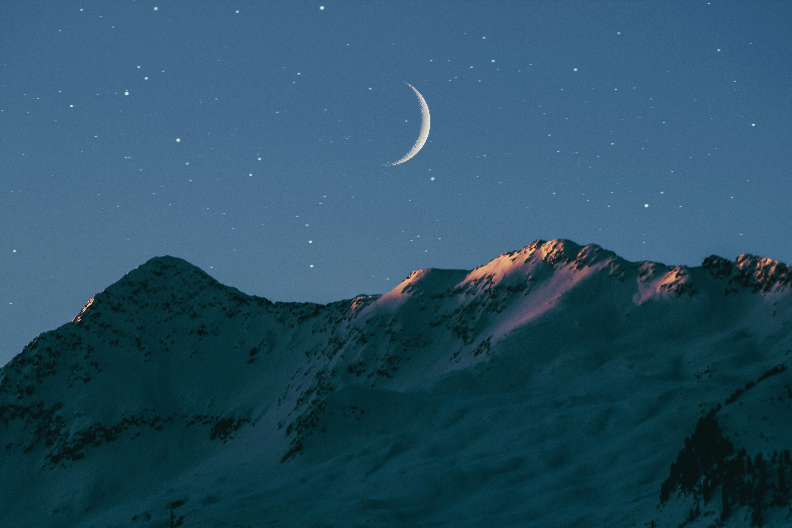
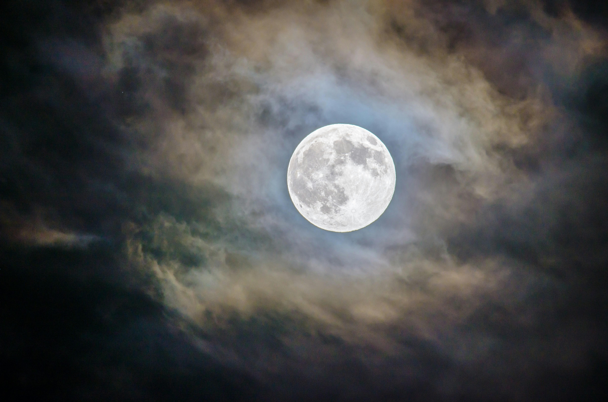
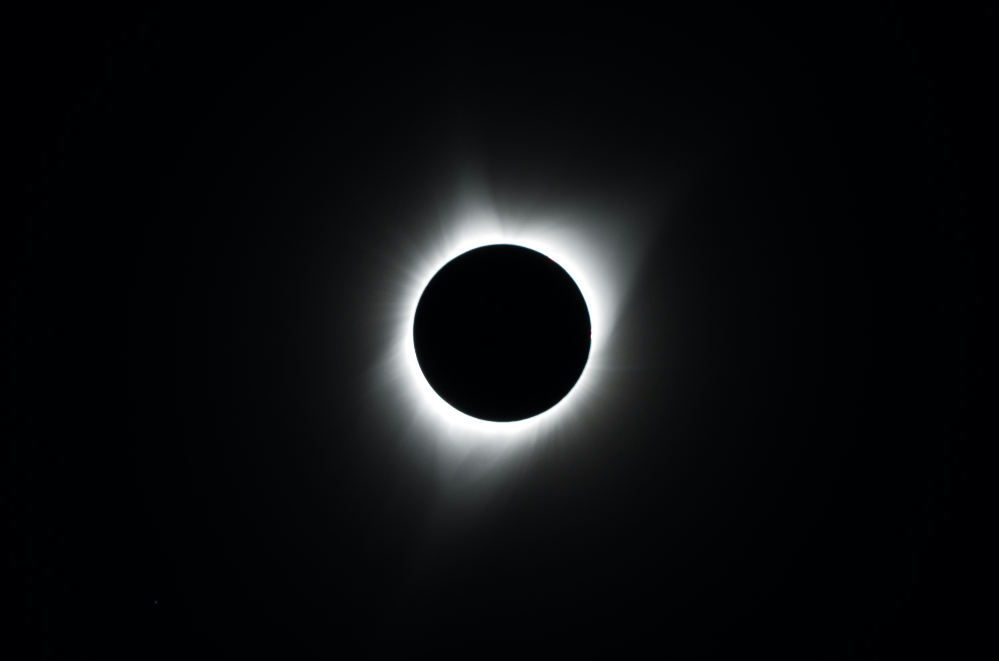
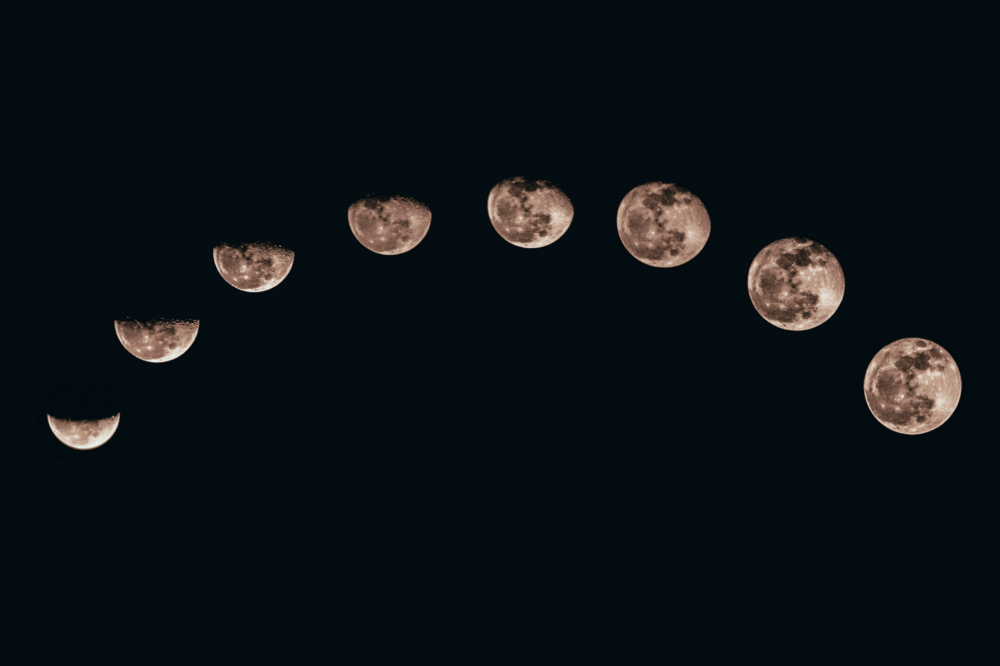
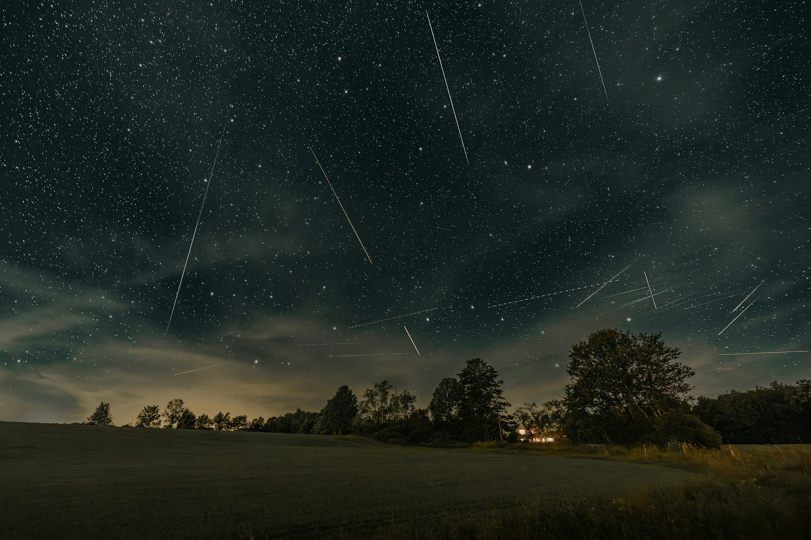

Aurora boreal

A aurora boreal é um fenômeno de luzes coloridas no céu, causado por partículas do Sol.

Aurora boreal
A aurora boreal é um fenômeno de luzes coloridas no céu, causado por partículas do Sol.

Arco-iris

O arco-íris é um fenômeno óptico formado quando a luz do Sol é refletida e dispersa pelas gotas de chuva.

Eclípse

O eclipse é um fenômeno natural que acontece quando um astro bloqueia total ou parcialmente a luz de outro.

Chuva de meteoros

A chuva de meteoros é um fenômeno natural em que vários meteoros cruzam o céu ao entrarem na atmosfera da Terra.